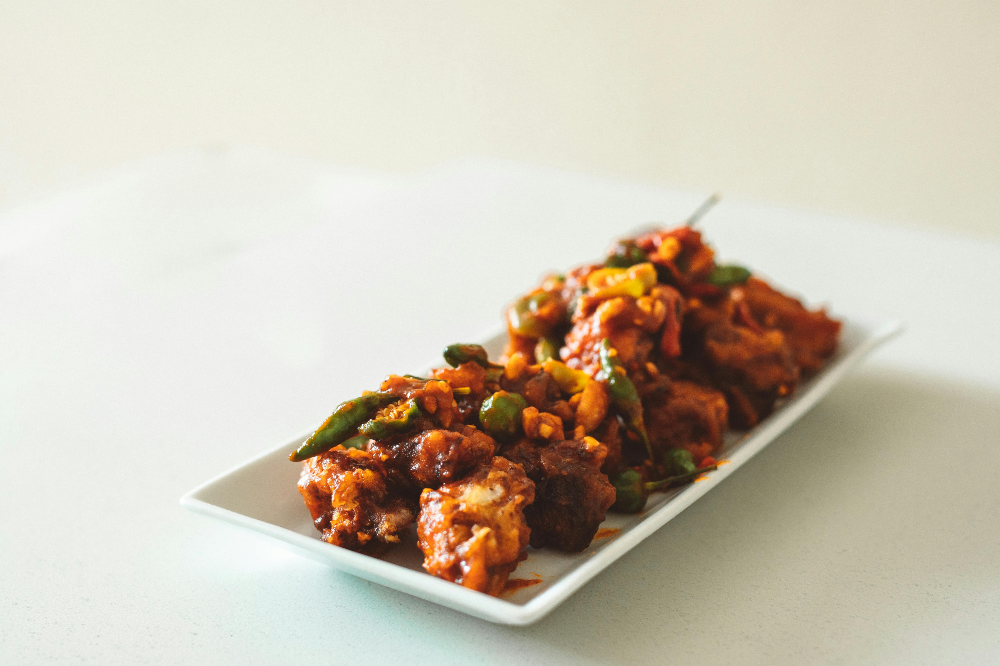

Chilli chicken is a popular Indo-Chinese dish known for its bold, spicy, and slightly tangy flavor. It features tender pieces of chicken that are marinated, lightly battered, and fried until crispy, then tossed in a savory sauce made with soy sauce, garlic, ginger, and green chilies. The dish is often enhanced with crunchy vegetables like bell peppers and onions, giving it a perfect balance of texture and taste.
Served either as a dry appetizer or with a rich gravy, chilli chicken is loved for its fiery kick and aromatic appeal. It pairs well with fried rice or noodles, making it a favorite in both street food stalls and restaurants. The combination of spices and sauces creates a mouthwatering dish that is both comforting and exciting to eat.
Mix chicken with cornflour, flour, soy sauce, ginger-garlic paste, salt, and pepper. Let it rest, then deep-fry until golden and crispy.
Heat a little oil, add chopped garlic, ginger, and green chilies. Cook briefly until fragrant.
Add onions and capsicum, stir-fry on high heat. Then add soy sauce, chili sauce, ketchup, vinegar, salt, and pepper.
Add fried chicken, toss well to coat. Add cornflour slurry if you want gravy, garnish with spring onions, and serve hot.